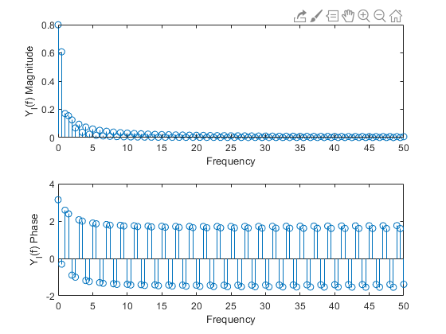
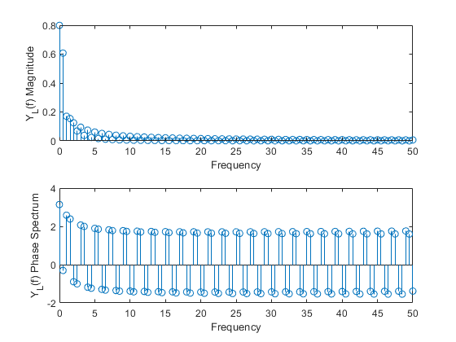
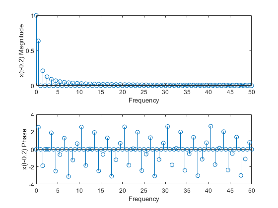
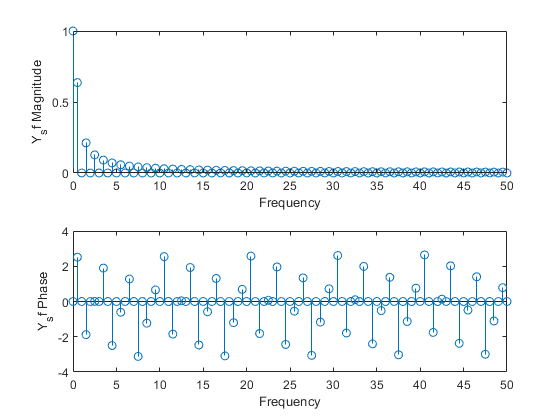
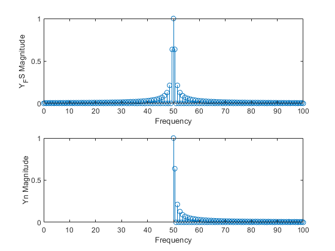

Contents
clc;
clear;
Task 1, section 1
precede = zeros(1,500);
trail = zeros(1,500);
sig_x = ones(1,1000);
x = [precede sig_x trail];
delta_t = 1e-3;
t = 0:delta_t:0.999;
sig_g = exp(-10.*t);
g = [precede sig_g trail];
Task 1, section 2
yl = 2.*g-x;
N = length(yl);
delta_f = 1/(N.*delta_t);
k = 0:N/2 - 1;
f = k.*delta_f;
Yl_f = fft(yl)*delta_t;
subplot(2,1,1)
stem(f,abs(Yl_f(1:N/2)));
ylabel('Y_l(f) Magnitude')
xlabel ('Frequency')
xlim([0 50]);
subplot(2,1,2)
stem(f,angle(Yl_f(1:N/2)));
ylabel('Y_l(f) Phase')
xlabel ('Frequency')
xlim([0 50]);

Task 1, section 3
Xf = fft(x).*delta_t;
Gf = fft(g).*delta_t;
YL_f = 2.*Gf-Xf;
figure
subplot(2,1,1)
stem(f,abs(YL_f(1:N/2)));
ylabel('Y_L(f) Magnitude')
xlabel ('Frequency')
xlim([0 50]);
subplot(2,1,2)
stem(f,angle(YL_f(1:N/2)));
ylabel('Y_L(f) Phase Spectrum')
xlabel ('Frequency')
xlim([0 50]);

Task 1, section 4
precede2 = zeros(1,700);
trail2 = zeros(1,300);
x_s = [precede2 sig_x trail2];
Xf_s = fft(x_s)*delta_t;
figure
subplot(2,1,1)
stem(f,abs(Xf_s(1:N/2)));
ylabel('x(t-0.2) Magnitude')
xlabel('Frequency')
xlim([0 50]);
subplot(2,1,2)
stem(f,angle(Xf_s(1:N/2)));
ylabel('x(t-0.2) Phase')
xlabel('Frequency')
xlim([0 50]);
Ys_f = Xf(1:N/2).*exp(-1j*0.4*pi*f);
figure
subplot(2,1,1)
stem(f,abs(Ys_f(1:N/2)));
ylabel('Y_sf Magnitude')
xlabel('Frequency')
xlim([0 50]);
subplot(2,1,2)
stem(f,angle(Ys_f(1:N/2)));
ylabel('Y_sf Phase')
xlabel('Frequency')
xlim([0 50]);
 
Task 1, section 5
FreqShift = exp(1j*100*pi*t);
Temp = [precede FreqShift trail];
x_n = x.*Temp;
Xf_n = fft(x_n).*delta_t;
figure
subplot(2,1,1)
stem(f,abs(Xf_n(1:N/2)));
ylabel('Y_FS Magnitude')
xlabel('Frequency')
xlim([0 100]);
subplot(2,1,2)
stem(f+50,abs(Xf(1:N/2)));
ylabel('Yn Magnitude')
xlabel('Frequency')
xlim([0 100]);
